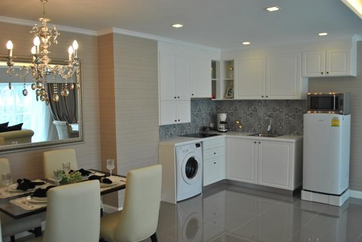

景色“泰美”——微笑国度之旅
一直想出国旅游一下，在网上查了各种资料以后决定去泰国，原因呢有两点，第一是因为离中国近，出行时间。第二当然是旅行成本低了。在做足了功课之后订了六月中旬的机票，往返机票大概2600左右，细算下来其实比去三亚要便宜，下面就跟大家一起分享一下我的泰国之旅！
泰国是可以落地签的国家，我为了省事提前找旅游公司帮我办了个旅游签，这样出机场的时候就不用排长队了，但是办理旅游签的前提是确定去泰国，如果申请成功后三个月内没有去就会被永久拒签，所以小伙伴们可以要想好了啊！为了方便大家做攻略，我也把落地签的示范附上

入境单
另一个需要注意的是买泰国的Happy 卡，下飞机换上卡就能用，某宝20块钱就能买一张。机场卖60多块钱。

happy卡
准备好这些东西就可以出发了！
漂亮的泰国空姐
从北京出发大概5个小时到曼谷是素万那普机场，一路顺利即将出机场了
外币兑换处
出了机场，坐机场大巴可以直接到芭提雅

提前在Airbnb上订好了酒店公寓，到了目的地直奔酒店


小区的环境没的说，楼下就是泳池，健身房。泳池的谁也很干净，晚上吃完饭还能游会儿泳。 放下行李冲了个澡，直奔海边，已经快到傍晚，天气不错。

晚上自然少不了一顿大餐了


四个人一共下来200来块钱，东西都是明码标价，不用担心“天价虾”，正宗的菠萝炒饭味道超棒。
接下来就去步行街逛逛了


回来的时候去步行街逛逛，人山人海到处都是酒吧、秀场氛围很high~
回去的时候突然想起来帕山上能俯瞰整个芭提雅，于是乎打车到帕山拍到了上面这张照片，芭提雅在泰国湾的怀抱下绽放出别样的美。
第二天真理寺走起~


泰国是佛教国家，全国9成以上人都信佛教，到了泰国随处可见的四面佛，而真理寺是由纯木头雕刻的寺庙据说已经雕刻了30多年还没完工。虽然不是什么行家慧眼，但是看见这么庞大精美的雕刻还是很震撼。


回来的时候路过大吉他古董店，进去满眼都是吉他，乐器爱好者的天堂啊！

不光有满墙的吉他 还有各种风格的照片墙，文艺青年的最爱有没有~

再放个毒
回来的时候小区对面有个正在盖的楼房，可能是职业病犯了突然好奇泰国的房子是什么情况，顺道就看了看项目




不看不知道原来泰国的房子精装修都带家具家电，一套大概50万就能买一套而且是永久产权，销售告诉我泰国土地比较稳定，最近几年每年增长8%，而且他们提供租赁服务，每年给固定的租金收益，看的我都心动了。突然觉得人生目标就是努力挣钱，到时候在泰国买套房留着养老。
接下来就是四方水上市场了


各种水果


回来的时候碰见一个非常配合的骑摩托大叔

时间过得真快，转眼已是归期，还有很多地方没有去过真是可惜，之前总以为泰国是个贫穷落后的小国，来过之后再发现之前想法太肤浅了，在泰国的街道上满是佛像和当地人洋溢在脸上的微笑，这种幸福的微笑让泰国的魅力更近一层，虽然这次旅行的时间太短，但并不是结束，我们还会再见！最后附上一张我很喜欢的照片